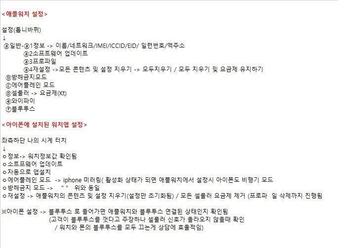

설정(톱니바퀴)
a. 일반-정보→ *이름/네트워크/IMEI/ICCID/EID/ 일련번호/맥주소
*소프트웨어 업데이트
*프로파일
*재설정->모든 콘텐츠 및 설정 지우기→ 모두 지우기/ 모두 지우기 및
요금제 유지하기
b.방해금지 모드
c.에어플레인 모드
d.셀룰러 요금제(Kt)
e.와이파이
f.블루투스
<아이폰에 설치된 위치앱 설정>
좌측하단 나의 시계 터치
*정보 -> 워치정보값 확인됨
*소프트웨어 업데이트
*자동으로 앱설치
* 에어플레인 모드→ iphone 미러링
(활성화 상태가 되면 애플워치에서 설정시 아이폰도 비행기 모드
*방해금지 모드> " "위와 동일
*재설정 →애플워치의 콘텐츠 및 설정 지우기(설정만 초기화됨)/ 모든 셀룰러 요금제
제거 (프로파일 삭제까지 진행됨 )
※아이폰 설정→ 블루투스로 들어가면 애플워치와 블루투스 연결된 상태인지 확인됨
(고객이 블루투스를 껏다고 주장하나 셀룰러 신호가 올라오지 않을때 확인
/워치와 폰의 블루투스를 모두 끄는게 상담에 효율적임)
